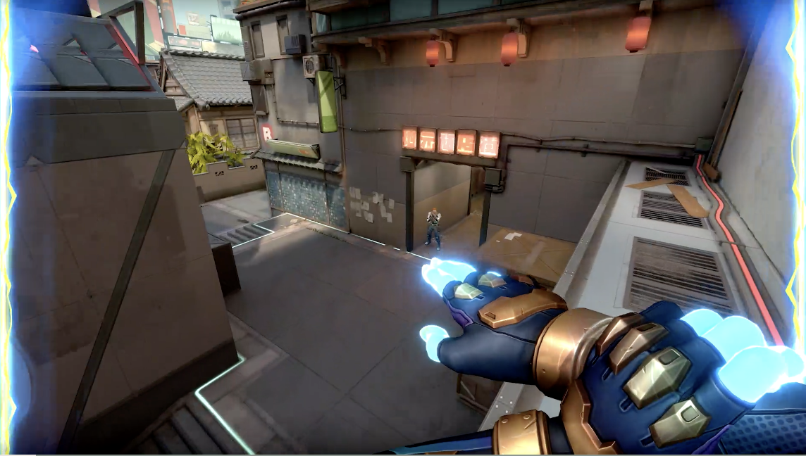
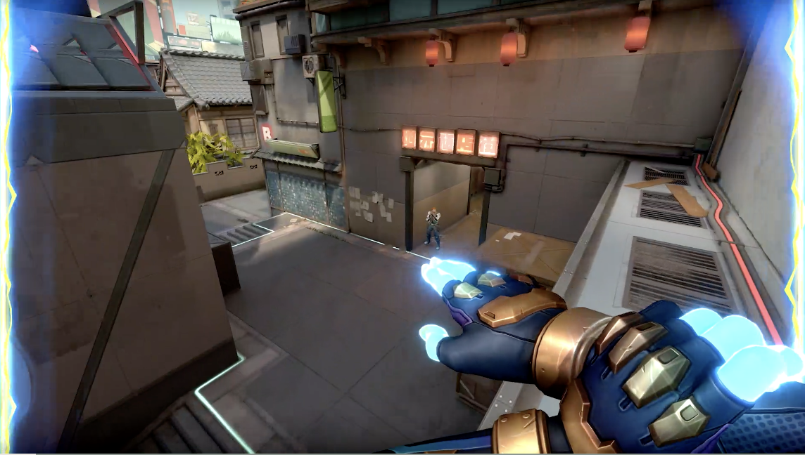
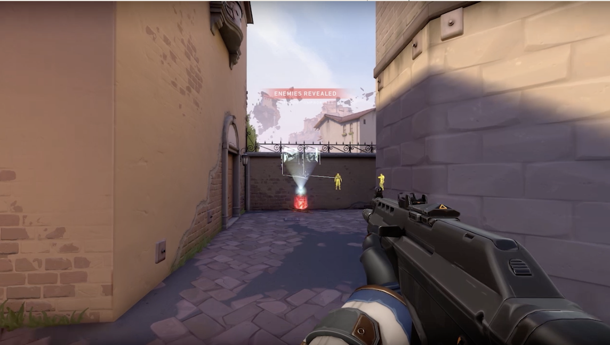
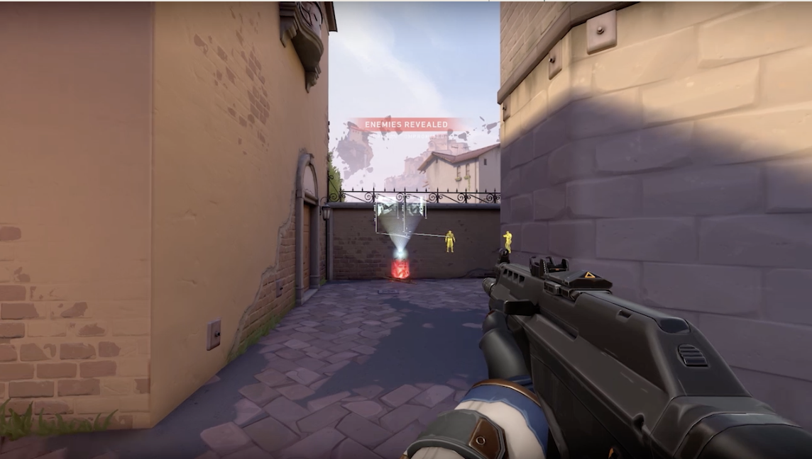
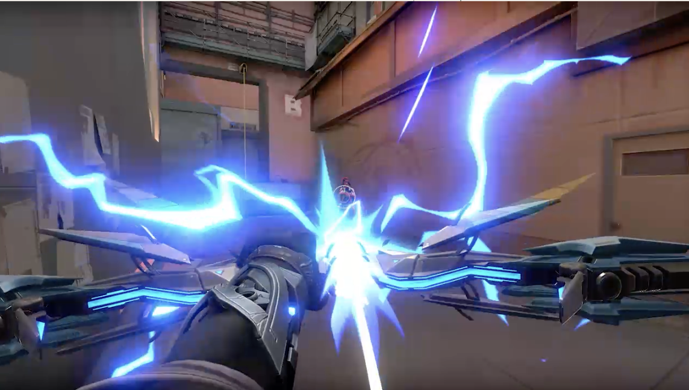
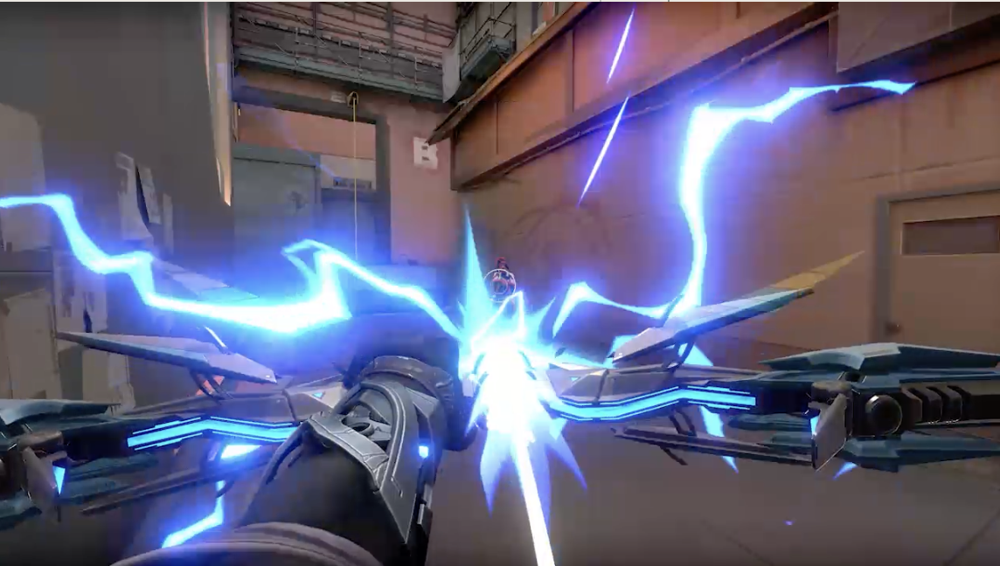

Valorant is PC-exclusive first-person shooter game. With 13 rounds, 2 teams of 5 use gunplay and character exclusive abilities to eliminate the enemy team, plant the bomb, or even defuse the bomb, round by round. Each character is special in their own way, using firearms or even superpowers to defeat the enemy team. Because of the effort placed into character uniqness and map design, the game is played and viewed worldwide on Twitch, a streaming platform for gamers.
 

Neon is a Filipino Agent with bright electric hair and can move forward at the speed of light. She is known for her ability to sprint around corners and "slide-cancel" like a Call of Duty player. Her Overdrive special ability grants her full power and speed, even allowing her to shoot a damaging lightning beam.

 

Cypher is a sentinel Agent from Morocca, with the abilty to flash and perform high IQ game-winning plays. The agent moves in silence as an information broker, while keeping tabs on enemy movements. Famous Valorant streamers like Dasnerth are known for using the agent with a shotgun to outplay some Valorant pros and even make them rage. Cypher's Neutral Theft special abilty allows the user to instantly reveal enemy locations through intel from a dead enemy player.
 

Sova stems from the cold parts of Russia as an inittiator agent. He's able to make way for duelests like Neon by reveling enemy location with his bow and arrow, shock them, or even fly out a drone if needed. This agent is great for players that are just getting into the game, trying to play passive, and be a team player. The Hunter's Fury special ability allows Sova to deal damage through walls and even reveal their location at the same time.